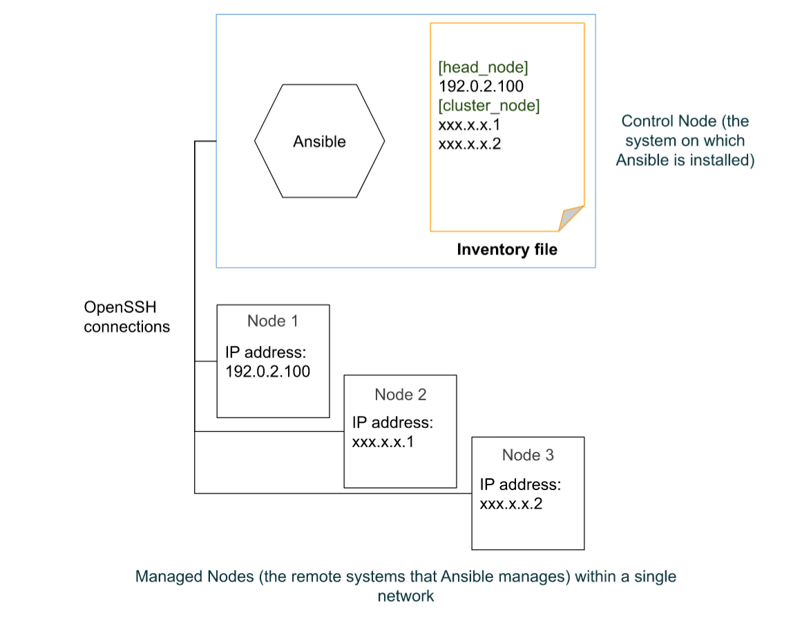
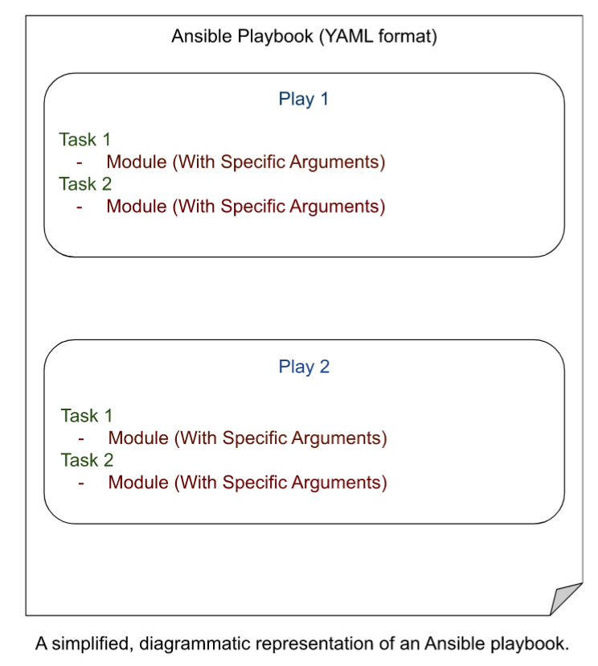
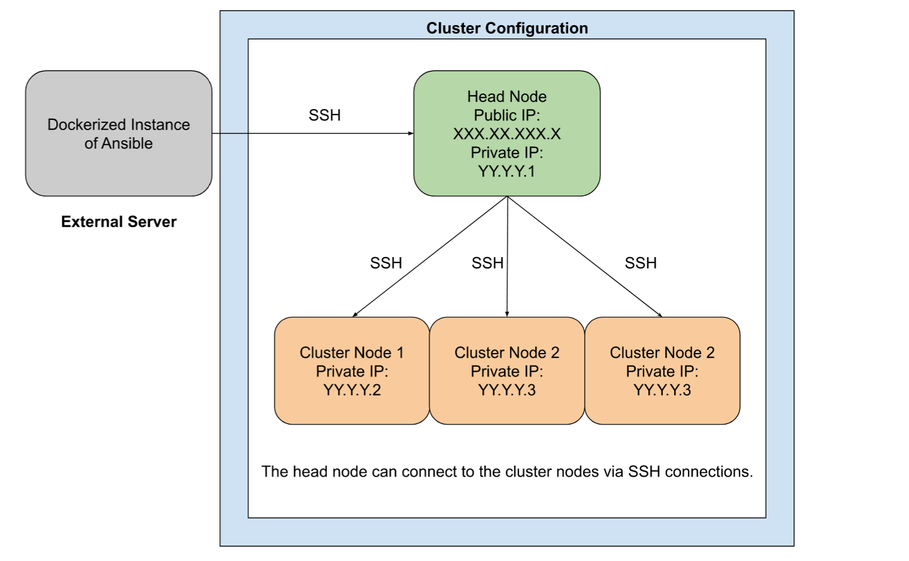
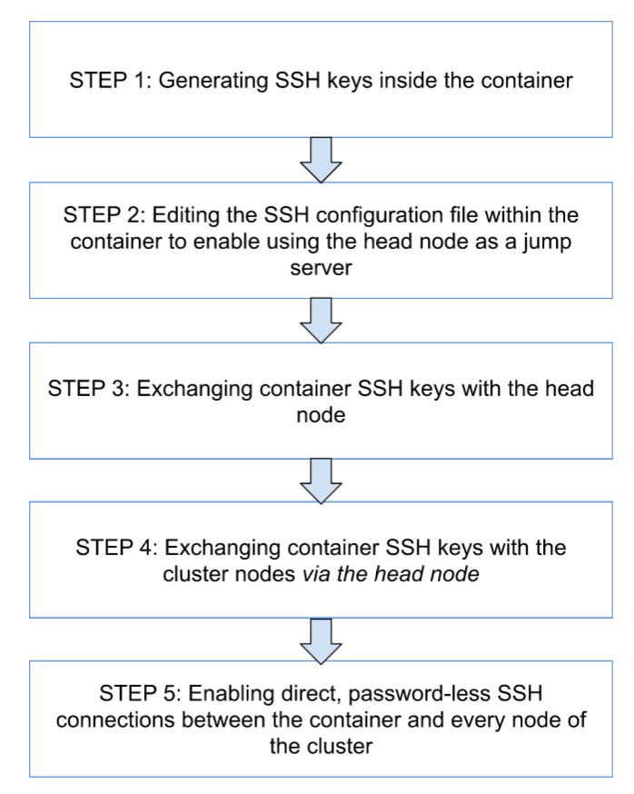

Using Ansible to remotely configure a cluster.
What is Ansible?
Ansible is an open-source IT automation tool that allows for automated management of remote systems.

A basic Ansible environment has the following three components:
Control Node: This is a system on which Ansible is installed, and the system from which Ansible commands such as
ansible-inventoryare issued. This is also where Ansible playbooks and configuration files are stored.Managed node: This is a remote system that Ansible intends to manage and configure.
Inventory: This is a list of managed nodes that are organized locally on the control node. This lists the IP addresses or the hostnames of the remote systems being managed along with any connection information needed.

What does Ansible do?
Ansible uses a declarative language in the YAML format to describe the desired end state of the managed nodes, and it can connect to these managed nodes via standard protocols like SSH and handle the execution of the tasks required to acheive this end state. These are done via YAML-based files called Playbooks.
Playbooks are automation blueprints, in the YAML format. Playbooks contain plays, which are a list of tasks that map to each managed node in the predefined inventory.
Tasks are a list of one or more modules that define the operations that Ansible can perform.
A Module is a unit of code that Ansible can run on managed nodes.

The key features of Ansible that make it deal to perform automated configuration management of remote systems are as follows:
Agentless Architecture: Ansible only needs to be installed on the Control Node, and the Managed nodes do not require Ansible to be installed.
Idempotent Execution: Ansible ensures that no matter how many time the same Playbook is run, the end state of the managed nodes will be the same, regardless of the initial state of the managed node.
Potential Use Case Scenario
Now, let’s get into the meat of the post, which is about using Ansible to connect to a cluster and configure each node of the cluster.
Let’s assume that we’ve been given access to a sparkling new cluster for computing purposes.
The cluster has a head node, and several individual cluster nodes.
Now, the head node has both a public and a private IP address.
The cluster nodes, however, only have private IP addresses, and can only be connected to via the head node.
We intend to use Ansible to automate and configure the cluster and it’s nodes.
Instead of downloading and installing Ansible on the head node of the cluster, we intend to use a dockerized version of Ansible to connect to the cluster.
Let’s assume that the head node has the hypothetical IP address XXX.XX.XXX.X.
Let’s also assume that there are three cluster nodes, each with private IP addresses in the format of:
- YY.Y.Y.2
- YY.Y.Y.3
- YY.Y.Y.4

The Ansible Dockerfile
# Loading from a miniconda3 image
FROM continuumio/miniconda3
# Installing Mamba using Conda.
# I find Mamba to be much faster for package installation compared to Conda.
RUN conda install -c conda-forge mamba -y
# Creating a Mamba ENV called `ansible_env`.
RUN mamba create -y -n ansible_env
# Setting the new environment as the default
RUN echo "conda activate ansible_env" >> ~/.bashrc
SHELL ["/bin/bash", "--login", "-c"]
#Installing Linux based dependencies
RUN apt-get update && \
apt-get install -y git nano software-properties-common gcc wget build-essential ssh less screen && \
apt-get clean && \
rm -rf /var/lib/apt/lists/*
#Installing ansible using mamba
RUN mamba install -y -c conda-forge ansible
# Generating a configuration file for Ansible.
# This will need to placed in a particular directory.
WORKDIR /etc
RUN ansible-config init --disabled -t all > ansible.cfg
# Creating an ansible folder in /etc/ to mount the hosts file
WORKDIR ../
RUN mkdir /etc/ansible
# Creating the entrypoint
ENTRYPOINT ["/bin/bash"]The above Docker image will require you to create a file called hosts to be mounted to /etc/ansible inside the container. This hosts file will be the inventory.
By default, Ansible expects the inventory file to be located at /etc/ansible/hosts.
The inventory is a list of the managed nodes you intend to connect to, and this is what we will be using to assess if the SSH connection has been set up properly.
The hosts file can be in INI or YAML formats. I went with INI, as follows:
[cluster]
XXX.XX.XXX.X
YY.Y.Y.2
YY.Y.Y.3
YY.Y.Y.4
[head_node]
XXX.XX.XXX.X
[cluster_nodes]
YY.Y.Y.2
YY.Y.Y.3
YY.Y.Y.4I first defined the cluster using all of it’s nodes, both the head node and the cluster nodes. I then defined the head node and cluster node seperately, forming groups, making running potential tasks on individual node types easier.
I created a folder called ansible_mount on the host directory, and created the hosts file there. I will be using ansible_mount to mount all the directories we will need in this tutorial.
Setting up the SSH connections
Ansible will need to be able to SSH directly into all the managed nodes in order to be able to perform tasks on each of them.
However, in our example set-up, it is not possible to directly SSH into the cluster nodes using their private IP addresses. (At least, not without some configuration.) This requires us to use the head node as a jump server and edit the SSH configuration file.
For the sake of making this process easier to understand, follow this flow chart for a break down of the individual steps.

Generating an SSH key
I created a folder inside the ansible_mount directory called .ssh.
I mounted /path/to/ansible_mount/.ssh to /root/.ssh in the Docker container.
Then, once within the Docker instance, I ran ssh-keygen -t ed25519 to generate a SSH key inside /root/.ssh.
Since the folder is mounted, this key persists, and is not deleted after termination of the container.
This generates two things. id_ed25519, and id_ed25519.pub.
id_ed25519 is the private key and cannot be shared under any circumstances.
id_ed25519.pub is our public key, and this is what we shall use to connect to the 4 nodes.
Editing the config file in .ssh to set up a jump host
Now, in order to be able to SSH into the clusters of the nodes in one line of code, I created a config file config at path/to/ansible_mount/.ssh/config.
Since the entirety of path/to/ansible_mount/.ssh is being mounted into the container at /root/.ssh, this config file will persist.
To reiterate, path/to/ansible_mount/.ssh contains both the keys and the config file.
This config file has the following text:
Host XXX.XX.XXX.X
HostName abc.host.domain
Host YY.Y.Y.2
ProxyJump sudo_user@XXX.XX.XXX.X
Host YY.Y.Y.3
ProxyJump sudo_user@XXX.XX.XXX.X
Host YY.Y.Y.4
ProxyJump sudo_user@XXX.XX.XXX.XThis sets up the head node as a jump server through which we can SSH into the cluster nodes using the private IP.
This allows for using XXX.XX.XXX.X(the head node of the cluster) as an intermediate server from which one can jump directly into the clusters.
Here, the term sudo_user refers to the user(s) who have sudo access to the head node.
Exchanging SSH keys with the head node
However, first I needed to set up a key exchange between the Docker container and the head node, so that I could directly SSH into the head node without a need for a password.
Connecting to a server for the first time through SSH requires input from the user to establish the authenticity of the host. Manually SSH into the head node if you’re doing this for the first time to confirm the authenticity of the host.
You will see something like this if you’re connecting to the head node for the first time:
The authenticity of host 'YY.Y.Y.4 (<no hostip for proxy command>)' can't be established.
ECDSA key fingerprint is xxx.
Are you sure you want to continue connecting (yes/no/[fingerprint])? Make sure to type in yes and accept this process.
From the docker container, I ran:
ssh-copy-id -i /root/.ssh/id_ed25519.pub sudo_user@abc.host.domain
You will see something like:
/usr/bin/ssh-copy-id: INFO: Source of key(s) to be installed: "/root/.ssh/id_ed25519.pub"
/usr/bin/ssh-copy-id: INFO: attempting to log in with the new key(s), to filter out any that are already installed
/usr/bin/ssh-copy-id: INFO: 1 key(s) remain to be installed -- if you are prompted now it is to install the new keysEnter your password when prompted and you should see:
Number of key(s) added: 1
Now try logging into the machine, with: "ssh 'sudo_user@abc.host.domain'"
and check to make sure that only the key(s) you wanted were added.This has copied the public key from the docker container into the head node at /.ssh/authorized_keys.
This made the docker container trusted by the head node, so when SSH’ing into the head node, there is no need for a password.
Test this out by running ssh sudo_user@abc.host.domain and see if it gets you into the head node without prompting you for a password.
Exchanging SSH keys with the cluster nodes
As said before, connecting to a server for the first time through SSH requires input from the user to establish the authenticity of the host. However, this is a bit more complicated for the cluster nodes. This will require you to do the following:
Once in the container, run:
ssh -J sudo_user@abc.host.domain sudo_user@Y.Y.Y.2
To connect to the cluster node using the head node as a jump node. This uses the head node as a jump server between the container and the cluster node.
Accept the connection process as before and enter the password for the sudo_user on the cluster node.
Do the same for all the nodes.
Make sure you accept the authenticity of the host by performing the above ssh command before proceeding!
Now, running these commands:
ssh sudo_user@XX.X.X.2
ssh sudo_user@XX.X.X.3
ssh sudo_user@XX.X.X.4
Allowed me to directly SSH into the cluster nodes as the user sudo_temp from the container, since we set up the ProxyJump function using the XXX.XX.XXX.X IP address of the head node!
Note that running these commands before completing the fingerprinting process will fail. You will need to manually connect to the clusters individually first.
However, this would still require me to enter the password for sudo_user@XXX.XX.XXX.X, since the cluster nodes did not have the keys in the docker container exchanged with it.
From the container, I ran:
ssh-copy-id -i /root/.ssh/id_ed25519.pub sudo_user@<private_IP_address_for_cluster>
For every single cluster. Enter the password when prompted. Again, like before, you should see something like:
/usr/bin/ssh-copy-id: INFO: Source of key(s) to be installed: "/root/.ssh/id_ed25519.pub"
/usr/bin/ssh-copy-id: INFO: attempting to log in with the new key(s), to filter out any that are already installed
/usr/bin/ssh-copy-id: INFO: 1 key(s) remain to be installed -- if you are prompted now it is to install the new keysEnter your password for the sudo_user on the cluster nodes. Again, you should see something like:
Number of key(s) added: 1
Now try logging into the machine, with: "ssh 'sudo_user@YY.Y.Y.2'"
and check to make sure that only the key(s) you wanted were added.Test the key exchange process by running:
ssh sudo_user@YY.Y.Y.2.
Do the same for all the other cluster nodes.
This copied the public key of the docker container into the authorized_keys for the 3 servers.
Direct SSH connections into the head node and the cluster nodes
Now it was possible to SSH into all 4 servers, without needing to enter a password.
For the head node, it was with the command:
ssh sudo_user@abc.host.domain
For the cluster nodes, it was with the command:
ssh <private_IP_address_for_cluster> -l sudo_user
This is essential to streamline the process by which Ansible can connect to the cluster nodes, since otherwise it would need the inventory files and the configuration files edited to enable ProxyJump and SSH password entry.
Ansible allows for using of a -u flag for user, and -u will always be sudo_user, since the keys are authorized for user temp.
Testing!
Initiate the docker container in interactive mode, making sure to mount:
/path/to/ansible_mount/.sshfrom the host directory to/root/.sshin the container directory./path/to/ansible_mount/hostsfrom the host directory to/etc/ansible/hostsin the container directory.
Once inside, run
ansible all -m ping -u <sudo_user>
Replacing <sudo_user> with the user who has SSH access to the nodes.
XXX.XX.XXX.X | SUCCESS => {
"ansible_facts": {
"discovered_interpreter_python": "/usr/libexec/platform-python"
},
"changed": false,
"ping": "pong"
}
YY.Y.Y.4 | SUCCESS => {
"ansible_facts": {
"discovered_interpreter_python": "/usr/bin/python3"
},
"changed": false,
"ping": "pong"
}
YY.Y.Y.2 | SUCCESS => {
"ansible_facts": {
"discovered_interpreter_python": "/usr/bin/python3"
},
"changed": false,
"ping": "pong"
}
YY.Y.Y.3 | SUCCESS => {
"ansible_facts": {
"discovered_interpreter_python": "/usr/bin/python3"
},
"changed": false,
"ping": "pong"
}should be the successful output.
Things to Remember
Remember that the keys generated on the host directory pose a security risk if the private keys are shared.
Also remember that the docker run command may become large and unwieldly depending on the folders needed to be mounted.
The example dockerfile shared here was used to build an image that can be located on Dockerhub at bush/ansible:latest.